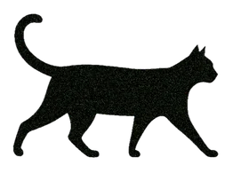

Une compétence difficile à entraîner en classe, et précieuse dans les cours hybrides ou 100% en ligne, où l’IAG offre un partenaire d’échange permanent.

Objectif et action de l’étudiant·e
OBJECTIF
Réinvestir, dans une interaction écrite spontanée, les acquis d’une séquence, à travers un jeu de rôle avec l’IAG. Un entraînement qui prépare à des situations d’échanges synchrones écrites comme orales.
ACTION DE L’ÉTUDIANT·E
Lire la situation
Copier le prompt
Le coller dans la conversation
Interagir
Partager le lien
Principe
L’enseignant·e imagine, avec ou sans l’aide de l’IAG, les jeux de rôles les plus pertinents pour chaque séquence pédagogique.
Elle/Il rédige un prompt détaillé, avec ou sans l’aide de l’IAG, dans lequel il est demandé à l’agent conversationnel de respecter un certain nombre de contraintes de manière à guider l’étudiant·e et à l’inciter à utiliser les formes étudiées en amont
L’étudiant·e copie-colle le prompt et dialogue avec l’IAG : un partenaire infatigable, disponible, sans jugement.
Pour préserver le caractère spontané de l’échange, il n’est pas demandé à l’IAG de fournir un feedback ici. Tout doit ressembler à une conversation, de sorte que l’étudiant·e, si elle/il le souhaite, peut choisir de ne pas réutiliser les éléments du cours. Le but premier est de communiquer.
Le prompt est donné dans son intégralité et non dans un presse-papier ou code QR, ce qui permet de montrer aux apprenant·e·s comment se structure un prompt.
Activités
Pour tester une activité, copiez son prompt et collez-le dans l’agent conversationnel que vous utilisez.
L’étiquette AIAS de chaque activité indique la place que la consigne laisse à l’IAG, de 1 (sans IAG) à 5 (exploration créative). Voir l’échelle
AIAS 3Collaboration ciblée
Débat
Donner ses arguments en faveur de l’apprentissage en ligne
TrèFLE · FLE · séquence "Comment apprendre ?"
Situation
Un·e ami·e n’apprend les langues qu’avec manuel et dictionnaire papier. Vous débattez pour le/la convaincre d’essayer des méthodes plus innovantes.
Lire le prompt
PROMPT
Tu joues le rôle d’un de mes amis qui n’aime que les méthodes traditionnelles. Pour apprendre une langue, tu ne te sers jamais des nouvelles technologies mais seulement d’un manuel, de cours classiques et du dictionnaire papier. Je vais essayer de te convaincre d’essayer des méthodes plus innovantes. Nous allons débattre. Tu donnes un seul argument à la fois et me laisses réagir. Une fois que j’ai réagi, tu contredis mon argument succinctement et m’en donnes un autre. N’écris pas le dialogue en entier. Quand je t’aurai donné 5 arguments valables, montre-toi convaincu et propose d’essayer une des méthodes énoncées.
AIAS 3Collaboration ciblée
Entretien d’embauche
Répondre aux questions d’un recruteur
TrèFLE · FLE · séquence "Je cherche un job étudiant"
Situation
Vous devez passer un entretien d’embauche pour travailler dans une chaine de restauration rapide. L’offre d’emploi est incluse dans le prompt. L’agent conversationnel joue le rôle du recruteur, répondez au mieux à ses questions pour obtenir le job !
Lire le prompt
PROMPT
#Tu joues le rôle d'un recruteur. #J'ai postulé à une annonce pour être recruté dans un des restaurants de la chaîne "Prêt à manger" comme employé de restauration polyvalent (service au comptoir et cuisine). #Voici la description des missions et du profil recherché :
##Missions du candidat : Participer de façon efficace et bienveillante à la création d'un environnement accueillant, en établissant un contact privilégié avec le client et en l'impressionnant par la qualité du service ; Préparer des plats gourmands à partir d'ingrédients d'excellente qualité, conformes aux normes de l'enseigne ; Associer service client et esprit d'équipe ; Garantir l'application et le respect des règles d'hygiène et de sécurité alimentaire ; Préparer une grande variété de délicieux produits à la fois sains et gourmands ; Préparer des boissons (chaudes/froides) adaptées au goût des saisons ; Valoriser nos vitrines grâce à la mise en place de nos produits ; Accueillir et garantir une expérience client mémorable ; Garantir un environnement de travail et d'accueil propre et entretenu.
##Profil du candidat : passionné(e) par la restauration ; polyvalent(e) et sait prendre des initiatives ; aborde le travail avec dynamisme ; soucieux(se) du détail ; ouvert(e) au changement ; aime le travail d'équipe ; disponible pour un temps plein de 35 h, travaillera au plus tôt à 6 h et au plus tard à 22 h, disponible pour travailler le week-end (et avec le sourire) dans Paris : 1er, 5e, 8e, 9e, 13e et 17e arrondissements et dans les Hauts-de-Seine ; challenger, énergique, de bonne humeur, passionné par la restauration.
#Pose-moi des questions comme dans un vrai entretien d'embauche, attends que je réponde comme un dialogue et rebondis sur mes réponses. À la fin de l'entretien, dis-moi si mes réponses conviennent pour obtenir le poste et donne-moi des conseils pour m'améliorer.
AIAS 3Collaboration ciblée
Enquête
Interroger un·e expert·e de l’éco-responsabilité
Life Hacks · Anglais · séquence "Eco-friendly Hacks"
Situation
Posez des questions à un éco-expert sur la manière d’adopter un mode de vie écoresponsable, en réutilisant le vocabulaire vu en classe.
Lire le prompt
PROMPT
I will play the role of an Eco-Detective who is investigating how to live more sustainably. The topic is "Zero-Waste Living in a small student apartment". You will play the role of an Eco-Expert who has all the secrets to being eco-friendly. My mission is to uncover these secrets through a series of questions. Wait for my question before you answer. Every time I ask a question, provide a short answer, giving me one quick and easy hack. Please don't explain in detail: your answer needs to lead to more questions. Then, ask me what my next question is.
AIAS 3Collaboration ciblée
Aide à la rédaction
Un "personal statement" pour partir aux USA
Dream Year Abroad · Anglais · séquence "Getting In"
Situation
Vous postulez à un programme d’études à l’étranger aux États-Unis et devez rédiger une lettre de motivation (personal statement). Un agent conversationnel, dans le rôle d’un conseiller, vous pose des questions pour vous aider à savoir quoi écrire.
Lire le prompt
PROMPT
YOUR ROLE: a guidance counselor helping me write a personal statement introducing myself to an admissions committee. Don't say you're an AI language model. MY ROLE: an international applicant for a study abroad program at a US university. MY OBJECTIVE: a back-and-forth conversation. TOPIC: provide me with a list of questions about who I am and what I have achieved so far, to help me know what to say in my statement. CONSTRAINTS: only short answers and follow-up questions; wait for my input before you reply; disable "thinking mode" if available. Are you ready?
AIAS 3Collaboration ciblée
Anglais de la recherche
Trouver un sujet avec un·e chercheur·se
Intercultural Communication · Anglais · séquence "From Ethnocentrism to Ethnorelativism"
Situation
Un chat en direct pendant les heures de permanence d’un professeur : vous êtes doctorant, l’IAG est chercheuse dans votre domaine. Discutez d’un mentor, d’un sujet d’étude, d’un projet de collaboration à l’étranger…
Lire le prompt
PROMPT
Act as a researcher in [your field]. I am a doctoral student in the same field and I'd like to have a realistic back-and-forth conversation with you in English. Please wait for my answer before asking another question or providing me with an answer. Use a conversational style. Here's my first question: "Hello! Thank you for taking the time to chat with me. I'm still undecided as to what topic I'd like to work on and I'd like to know if you had some pointers."
AIAS 3Collaboration ciblée
Dialogue du quotidien
Se faire conseiller à la pharmacie
TrèFLE · FLE · séquence "Je suis malade"
Situation
Vous êtes malade et allez à la pharmacie. Choisissez une maladie et demandez traitements, posologie, contre-indications et forme du médicament.
Lire le prompt
PROMPT
Je suis un.e étudiant.e de FLE et j’aimerais m’entraîner à parler de la santé et pratiquer l’interaction. Joue un dialogue fictif avec moi dans une pharmacie en France. Toi : agis comme un pharmacien qui accueille un client dans son officine, en commençant par dire bonjour. Tu ne connais pas le client ni ses problèmes : tu lui poses des questions pour l’aider. Pas besoin de vraies connaissances médicales : c’est un jeu ! Moi : je joue un client qui a un problème et veut se renseigner sur des traitements. Règle : réponds à une seule question à la fois, une seule information par phrase.
Ce qu’on observe, limites et pistes
Ce qu’on observe
Ces activités ne sont ni obligatoires, ni notées. Cependant, lorsque les étudiant·e·s partagent le lien de leur conversation, on observe chez certains un recours à l’IAG pour répondre à l’IAG, ce qui interroge le rapport à l’effort.
Les étudiant·e·s qui font l’activité eux-mêmes rapportent qu’elles/ils en tirent un bénéfice, notamment parce qu’elles/ils ne craignent plus l’erreur.
Une partie importante de ces étudiant·e·s déclare faire l’effort de réinvestir le cours pendant que les autres préfèrent un échange spontané.
Limites
L’exercice n’est pas toujours perçu comme assez utile ou motivant pour justifier un effort personnel.
Quand l’étudiant·e utilise l’IAG pour répondre à l’IAG, l’interaction perd tout intérêt pédagogique.
Il est difficile de faire en sorte que l’étudiant·e réinvestisse systématiquement les éléments du cours sans nuire à la communication naturelle.
Le nombre de tokens est limité : les étudiant·e·s les plus désireux d’interagir peuvent se retrouver bloqués et ne pas terminer la conversation, a fortiori s’ils sont sur un plan gratuit.
On ne peut pas contrôler la qualité des dialogues avec l’IAG, qui peut dériver ou halluciner.
Nos pistes
Ne pas demander aux étudiant·e·s de partager le lien des interactions de manière à libérer les étudiant·e·s de tout jugement : si elles/ils souhaitent en discuter avec le tuteur, elles/ils lui écrivent.
Inclure un temps de réflexion métacognitive au format vidéo en faisant verbaliser à l’étudiant·e ce qu’elle/il a réinvesti
Utiliser des Gems/GPTs pour remplacer les prompts de manière à mieux contrôler les sorties de l’IAG et guider davantage les étudiant·e·s pour qu’elles/ils réinvestissent plus naturellement les éléments du cours. Enseigner le prompt engineering séparément.
Démo et défi
Démo
Lisez une interaction écrite entre une étudiante et ChatGPT.